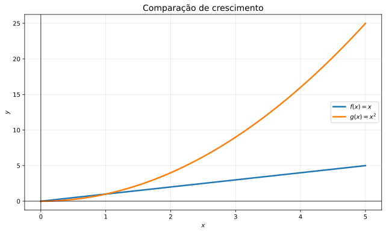
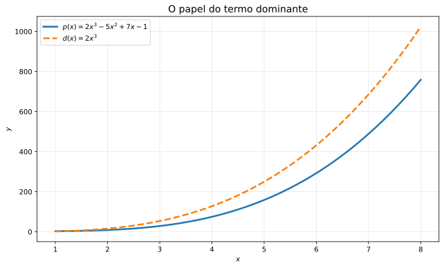
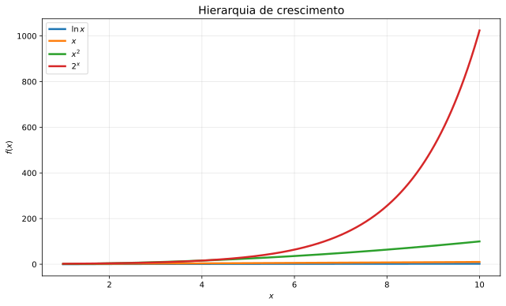
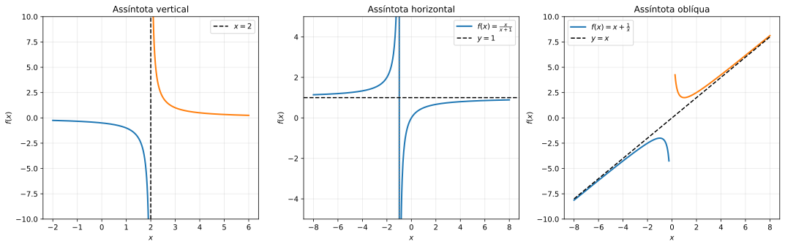

import numpy as np
import matplotlib.pyplot as plt
x = np.linspace(0, 5, 400)
fig, ax = plt.subplots(figsize=(9, 5.5))
ax.plot(x, x, label=r"$f(x)=x$", linewidth=2.5)
ax.plot(x, x**2, label=r"$g(x)=x^2$", linewidth=2.5)
ax.set_title("Comparação de crescimento", fontsize=14)
ax.set_xlabel("$x$")
ax.set_ylabel("$y$")
ax.grid(True, alpha=0.3)
ax.axhline(0, color="black", linewidth=0.8)
ax.axvline(0, color="black", linewidth=0.8)
ax.legend()
fig.tight_layout()
fig.savefig("images/1.16-crescimento-linear-quadratico.svg",
format="svg", bbox_inches="tight")
plt.close(fig)📘 Módulo 1.16: Crescimento e Comportamento Assintótico
cálculo
matemática
curso
funções
crescimento
assíntotas
Estudo do crescimento e decrescimento de funções, comparação de taxas de crescimento, termo dominante e introdução ao comportamento assintótico e às assíntotas.
🏠 ← Sumário do Curso · ← Cursos de Matemática · ← Seção de Matemática
🎯 Aula anterior: 👉 1.15 Modelos com Funções Elementares
🎯 Próxima aula: 👉 1.17 Revisão Geral do Módulo 1
Dica❓ Pergunta Disparadora
Como comparar o crescimento de duas funções quando seus argumentos se tornam muito grandes?
O que significa dizer que o gráfico de uma função se aproxima de uma reta?
Uma função pode crescer indefinidamente sem que seu crescimento continue acelerando?
Nota📌 Objetivos de Aprendizagem
Ao final desta aula, você deverá ser capaz de:
- Identificar intervalos de crescimento e decrescimento de funções.
- Interpretar a taxa de variação média em intervalos.
- Comparar os comportamentos de funções lineares, polinomiais, exponenciais e logarítmicas.
- Reconhecer o papel do termo dominante no comportamento de polinômios.
- Compreender a ideia de comportamento assintótico.
- Reconhecer e interpretar assíntotas verticais, horizontais e oblíquas.
- Relacionar o comportamento assintótico ao estudo posterior de limites e derivadas.
1 📘 Crescimento e Comportamento Assintótico
Quando estudamos funções, não queremos apenas calcular valores isolados. Queremos entender seu comportamento geral.
Algumas perguntas naturais são:
- A função cresce ou decresce?
- Cresce rapidamente ou lentamente?
- Sua taxa de crescimento permanece constante?
- Sua taxa de crescimento aumenta ou diminui?
- Aproxima-se de algum valor?
- Cresce indefinidamente?
- Como se comporta quando \(x\) fica muito grande?
Essas perguntas nos levam ao estudo do crescimento e do comportamento assintótico.
A palavra assintótico está relacionada ao comportamento de uma função em regiões extremas: nas proximidades de determinados pontos ou quando a variável independente tende ao infinito.
Esse estudo prepara diretamente o terreno para o cálculo de limites, pois muitas das perguntas que fazemos sobre o comportamento de uma função podem ser formuladas e respondidas por meio deles.
1.1 📈 Crescimento de funções
Dizer que uma função cresce significa dizer que seus valores aumentam quando a variável independente aumenta.
Seja \(f\) uma função definida em um intervalo \(I\). Dizemos que \(f\) é não decrescente em \(I\) quando, para quaisquer \(x_1,x_2\in I\), temos:
\[ x_1<x_2 \implies f(x_1)\leq f(x_2). \]
Se a desigualdade entre os valores da função for sempre estrita, isto é,
\[ x_1<x_2 \implies f(x_1)<f(x_2), \]
dizemos que a função é estritamente crescente.
Por exemplo,
\[ f(x)=x \]
é estritamente crescente em todo \(\mathbb{R}\).
Já a função
\[ g(x)=x^2 \]
não é crescente em todo \(\mathbb{R}\). Ela é estritamente decrescente em
\[ (-\infty,0] \]
e estritamente crescente em
\[ [0,+\infty). \]
Observe que o comportamento de uma função pode mudar conforme o intervalo considerado.
1.1.1 Visualizando o crescimento
A comparação entre \(f(x)=x\) e \(g(x)=x^2\) permite visualizar dois comportamentos diferentes. A primeira função cresce com inclinação constante; a segunda apresenta uma inclinação cada vez maior quando \(x\) aumenta.

NotaClique para ver o código Python
1.2 📉 Decrescimento de funções
Uma função é não crescente em um intervalo quando seus valores não aumentam à medida que \(x\) aumenta.
Formalmente,
\[ x_1<x_2 \implies f(x_1)\geq f(x_2). \]
Se a desigualdade for sempre estrita,
\[ x_1<x_2 \implies f(x_1)>f(x_2), \]
a função é chamada de estritamente decrescente.
Por exemplo,
\[ f(x)=-x \]
é estritamente decrescente em todo \(\mathbb{R}\).
Já a função
\[ g(x)=\frac{1}{x} \]
é estritamente decrescente em cada um dos intervalos
\[ (-\infty,0) \]
e
\[ (0,+\infty). \]
Entretanto, não é decrescente em todo o seu domínio, que é a união desses intervalos.
Isso ocorre porque, por exemplo,
\[ -1<1, \]
mas
\[ g(-1)=-1<1=g(1). \]
Portanto, a condição de monotonicidade precisa ser verificada considerando todos os pares de pontos do intervalo em questão.
1.3 ⏱️ Taxa de variação média
Duas funções podem crescer, mas em ritmos muito diferentes.
Para comparar o quanto uma função varia em determinado intervalo, utilizamos a taxa de variação média.
Se uma função \(f\) está definida em um intervalo que contém \(x_1\) e \(x_2\), com \(x_1\neq x_2\), sua taxa de variação média entre esses pontos é:
\[ \boxed{ \frac{f(x_2)-f(x_1)}{x_2-x_1} } \]
O numerador representa a variação dos valores da função, enquanto o denominador representa a variação da variável independente.
Geometricamente, essa razão corresponde à inclinação da reta secante que passa pelos pontos
\[ P_1=(x_1,f(x_1)) \]
e
\[ P_2=(x_2,f(x_2)). \]
1.3.1 Exemplo: função quadrática
Considere
\[ f(x)=x^2. \]
Entre \(x=1\) e \(x=3\), temos:
\[ f(1)=1 \]
e
\[ f(3)=9. \]
A taxa de variação média é:
\[ \frac{f(3)-f(1)}{3-1} = \frac{9-1}{2} = 4. \]
Portanto, nesse intervalo, a taxa de variação média é igual a \(4\).
Interpretação: para cada unidade de variação de \(x\), a função apresenta, em média, uma variação de quatro unidades nesse intervalo.
A taxa de variação média não deve ser confundida com a taxa de variação instantânea. Esta última será estudada posteriormente, no cálculo diferencial.
1.4 📈 Crescimento linear e afim
Uma função afim tem a forma:
\[ f(x)=ax+b. \]
Quando \(a>0\), ela é estritamente crescente em todo \(\mathbb{R}\).
Quando \(a<0\), é estritamente decrescente.
Quando \(a=0\), é constante.
Por exemplo,
\[ f(x)=3x+2 \]
é crescente e apresenta taxa de variação constante igual a \(3\).
Isso significa que, sempre que \(x\) aumenta uma unidade, o valor de \(f(x)\) aumenta três unidades.
Observação terminológica: no sentido matemático estrito, uma função linear tem a forma \(f(x)=ax\), enquanto uma função afim tem a forma \(f(x)=ax+b\). Em aplicações, é comum utilizar a expressão “modelo linear” também para modelos afins.
1.5 📈 Crescimento polinomial
Uma função polinomial tem a forma:
\[ p(x)=a_nx^n+a_{n-1}x^{n-1}+\cdots+a_1x+a_0, \]
em que \(a_n\neq 0\).
Para valores muito grandes de \(|x|\), o termo de maior grau passa a dominar o comportamento do polinômio.
Por exemplo, considere:
\[ p(x)=2x^3-5x^2+7x-1. \]
Seu termo de maior grau é:
\[ 2x^3. \]
Quando \(x\) cresce em direção a \(+\infty\), os termos de grau menor tornam-se relativamente menos importantes.
Assim, o comportamento de \(p(x)\) para valores muito grandes de \(x\) é governado principalmente por \(2x^3\).
Mais precisamente, a razão entre o polinômio e seu termo dominante tende a \(1\):
\[ \frac{2x^3-5x^2+7x-1}{2x^3} \longrightarrow 1 \quad \text{quando }x\to+\infty. \]
Isso explica por que o termo dominante é tão importante no estudo do comportamento assintótico.
1.5.1 Visualizando o termo dominante
Considere o polinômio:
\[ p(x)=2x^3-5x^2+7x-1. \]
Vamos compará-lo com seu termo dominante:
\[ d(x)=2x^3. \]

NotaClique para ver o código Python
import numpy as np
import matplotlib.pyplot as plt
x = np.linspace(1, 8, 500)
p = 2*x**3 - 5*x**2 + 7*x - 1
d = 2*x**3
fig, ax = plt.subplots(figsize=(9, 5.5))
ax.plot(x, p, label=r"$p(x)=2x^3-5x^2+7x-1$", linewidth=2.5)
ax.plot(x, d, "--", label=r"$d(x)=2x^3$", linewidth=2.5)
ax.set_title("O papel do termo dominante", fontsize=14)
ax.set_xlabel("$x$")
ax.set_ylabel("$y$")
ax.grid(True, alpha=0.3)
ax.legend()
fig.tight_layout()
fig.savefig("images/1.16-termo-dominante.svg",
format="svg", bbox_inches="tight")
plt.close(fig)O gráfico mostra que, à medida que \(x\) aumenta, o polinômio e seu termo dominante apresentam comportamentos cada vez mais próximos em termos relativos.
Para compreender melhor essa aproximação, consideremos a razão entre o polinômio e seu termo dominante:
\[ \begin{aligned} \frac{p(x)}{d(x)} &=\frac{2x^3-5x^2+7x-1}{2x^3}\\[4pt] &=1-\frac{5}{2x}+\frac{7}{2x^2} -\frac{1}{2x^3}. \end{aligned} \]
Calculando o limite quando \(x\) tende ao infinito, obtemos:
\[ \boxed{ \lim_{x\to+\infty}\frac{p(x)}{d(x)}=1 } \]
Isso significa que, para valores suficientemente grandes de \(x\), o polinômio e seu termo dominante tornam-se praticamente equivalentes em termos relativos.
É importante observar que a diferença absoluta entre eles não tende a zero:
\[ p(x)-d(x)=-5x^2+7x-1, \]
cujo módulo cresce sem limite à medida que \(x\to+\infty\). O que tende a zero é a diferença relativa:
\[ \lim_{x\to+\infty} \frac{p(x)-d(x)}{d(x)}=0. \]
Portanto, embora os valores de \(p(x)\) e \(d(x)\) não se aproximem em distância absoluta, a diferença entre eles se torna desprezível quando comparada à magnitude do termo dominante.
NotaUma notação para a equivalência assintótica
Em Matemática, quando duas funções satisfazem
\[ \lim_{x\to+\infty}\frac{f(x)}{g(x)}=1, \]
dizemos que elas são assintoticamente equivalentes e escrevemos
\[ \boxed{f(x)\sim g(x)} \]
No exemplo estudado, portanto,
\[ \boxed{p(x)\sim 2x^3,\qquad x\to+\infty.} \]
Essa notação indica que, para valores suficientemente grandes de \(x\), as duas funções apresentam o mesmo comportamento em termos relativos. Não significa que seus valores sejam iguais ou que a diferença absoluta entre eles tenda a zero.
Atenção: quando \(x\to-\infty\), o termo dominante também determina o comportamento assintótico do polinômio. Entretanto, o sinal dos valores depende do sinal do coeficiente líder e da paridade do grau. Por isso, devemos distinguir o comportamento do polinômio em \(+\infty\) daquele observado em \(-\infty\).
1.6 📈 Crescimento exponencial
Funções exponenciais têm a forma:
\[ f(x)=a^x, \]
com
\[ a>0,\qquad a\neq 1. \]
Quando \(a>1\), a função é estritamente crescente.
Quando \(0<a<1\), é estritamente decrescente.
Considere, por exemplo,
\[ f(x)=2^x. \]
Alguns de seus valores são:
| \(x\) | \(2^x\) |
|---|---|
| \(0\) | \(1\) |
| \(1\) | \(2\) |
| \(2\) | \(4\) |
| \(3\) | \(8\) |
| \(10\) | \(1024\) |
| \(20\) | \(1048576\) |
O crescimento exponencial é caracterizado pela multiplicação por um fator constante quando a variável aumenta uma unidade.
Por exemplo:
\[ 2^{x+1}=2\cdot 2^x. \]
Assim, cada aumento unitário de \(x\) dobra o valor da função.
O crescimento exponencial supera o crescimento de qualquer polinômio de grau fixo quando \(x\to+\infty\).
Por exemplo, embora \(x^5\) possa assumir valores muito grandes, a função \(2^x\) acaba crescendo mais rapidamente.
1.7 📈 Crescimento logarítmico
Funções logarítmicas apresentam crescimento muito lento.
Considere:
\[ f(x)=\ln x, \]
definida para
\[ x>0. \]
Essa função é estritamente crescente, mas seu crescimento desacelera à medida que \(x\) aumenta.
Observe alguns valores:
| \(x\) | \(\ln x\) |
|---|---|
| \(1\) | \(0\) |
| \(e\) | \(1\) |
| \(e^2\) | \(2\) |
| \(e^5\) | \(5\) |
| \(e^{10}\) | \(10\) |
Para que \(\ln x\) aumente de \(1\) para \(10\), a entrada precisa aumentar de \(e\) para \(e^{10}\).
Isso evidencia o crescimento lento da função logarítmica.
Em muitas comparações assintóticas, logaritmos crescem mais lentamente que qualquer potência positiva de \(x\).
1.8 🪜 Uma hierarquia intuitiva de crescimento
Para \(x\to+\infty\), uma hierarquia comum de crescimento é:
\[ \ln x \]
cresce mais lentamente que
\[ x^\alpha \]
para \(\alpha>0\), que cresce mais lentamente que
\[ a^x \]
para \(a>1\).
De modo intuitivo:
\[ \boxed{ \ln x \ll x^\alpha \ll a^x } \]
O símbolo \(\ll\), nesta aula, indica que a função à esquerda cresce mais lentamente que a função à direita, no sentido assintótico.
Essa comparação vale para valores suficientemente grandes de \(x\). Não significa que as desigualdades entre os valores das funções sejam necessariamente verdadeiras para todo \(x\) positivo.
1.8.1 Comparação visual de diferentes crescimentos
O gráfico abaixo apresenta quatro funções:
\[ \ln x,\qquad x,\qquad x^2,\qquad 2^x. \]

NotaClique para ver o código Python
import numpy as np
import matplotlib.pyplot as plt
x = np.linspace(1, 10, 500)
fig, ax = plt.subplots(figsize=(9, 5.5))
ax.plot(x, np.log(x), label=r"$\ln x$", linewidth=2.5)
ax.plot(x, x, label=r"$x$", linewidth=2.5)
ax.plot(x, x**2, label=r"$x^2$", linewidth=2.5)
ax.plot(x, 2**x, label=r"$2^x$", linewidth=2.5)
ax.set_title("Hierarquia de crescimento", fontsize=14)
ax.set_xlabel("$x$")
ax.set_ylabel("$f(x)$")
ax.grid(True, alpha=0.3)
ax.legend()
fig.tight_layout()
fig.savefig("images/1.16-hierarquia-crescimento.svg",
format="svg", bbox_inches="tight")
plt.close(fig)Observe que o gráfico utiliza uma escala vertical comum. Por isso, a exponencial acaba dominando visualmente as demais curvas na região final.
1.9 ♾️ Comportamento assintótico
O comportamento assintótico descreve como uma função se comporta quando a variável independente se aproxima de uma região extrema.
Isso pode acontecer de duas formas principais:
- Quando \(x\) se aproxima de um ponto que pode apresentar comportamento especial.
- Quando \(x\) tende a \(+\infty\) ou a \(-\infty\).
Por exemplo, considere:
\[ f(x)=\frac{1}{x}. \]
Essa função apresenta um comportamento especial nas proximidades de \(x=0\).
Quando \(x\) se aproxima de zero pela direita, seus valores crescem sem limite:
\[ \frac{1}{0{,}1}=10, \]
\[ \frac{1}{0{,}01}=100, \]
\[ \frac{1}{0{,}001}=1000. \]
Pela esquerda, entretanto, os valores decrescem sem limite:
\[ \frac{1}{-0{,}1}=-10, \]
\[ \frac{1}{-0{,}01}=-100. \]
Esse comportamento indica uma assíntota vertical em \(x=0\).
Uma assíntota é uma reta que descreve uma aproximação do gráfico em determinada região. No caso vertical, essa aproximação ocorre nas proximidades de uma abscissa; nos casos horizontal e oblíquo, ocorre quando \(x\) tende ao infinito.
1.10 📏 Três tipos de assíntota
Nesta introdução, vamos reconhecer os três tipos fundamentais de assíntota e compreender a ideia matemática por trás de cada um.
O estudo detalhado dos procedimentos algébricos para determiná-las, especialmente em funções racionais, será desenvolvido no aprofundamento opcional 1.23-AP.
1.10.1 Assíntota vertical
Uma reta vertical \(x=c\) é uma assíntota vertical de uma função quando pelo menos um dos limites laterais da função, ao se aproximar de \(c\), é infinito positivo ou negativo.
Considere:
\[ f(x)=\frac{1}{x-2}. \]
Quando \(x\) se aproxima de \(2\) pela direita, a função cresce sem limite:
\[ \lim_{x\to 2^+}\frac{1}{x-2}=+\infty. \]
Quando \(x\) se aproxima de \(2\) pela esquerda, a função decresce sem limite:
\[ \lim_{x\to 2^-}\frac{1}{x-2}=-\infty. \]
Portanto, a reta
\[ \boxed{x=2} \]
é uma assíntota vertical.
Observe que a função não está definida em \(x=2\). A assíntota descreve o comportamento do gráfico nas proximidades desse valor.
1.10.2 Assíntota horizontal
Uma reta horizontal \(y=L\) é uma assíntota horizontal quando a função se aproxima do valor \(L\) em pelo menos uma das direções do infinito.
Considere:
\[ f(x)=\frac{x}{x+1}. \]
Podemos reescrever a expressão dividindo o numerador e o denominador por \(x\):
\[ f(x)=\frac{1}{1+\frac{1}{x}}. \]
Quando \(x\) tende a \(+\infty\) ou a \(-\infty\), o termo \(1/x\) se aproxima de zero.
Consequentemente, a função se aproxima de:
\[ \frac{1}{1+0}=1. \]
Assim, a reta
\[ \boxed{y=1} \]
é uma assíntota horizontal nas duas direções do infinito.
1.10.3 Assíntota oblíqua
Algumas funções não se aproximam de uma reta horizontal, mas de uma reta inclinada.
Considere:
\[ f(x)=\frac{x^2+1}{x}. \]
Podemos reescrever:
\[ f(x)=x+\frac{1}{x}. \]
Quando \(x\to+\infty\) ou \(x\to-\infty\), o termo \(1/x\) se aproxima de zero.
Portanto, a diferença entre a função e a reta \(y=x\) se aproxima de zero:
\[ f(x)-x=\frac{1}{x}. \]
Assim, a reta
\[ \boxed{y=x} \]
é uma assíntota oblíqua nas duas direções do infinito.
1.10.4 Visualizando os três tipos de assíntota
A figura apresenta três exemplos:
- Assíntota vertical: \(f(x)=1/(x-2)\).
- Assíntota horizontal: \(f(x)=x/(x+1)\).
- Assíntota oblíqua: \(f(x)=x+1/x\).

NotaClique para ver o código Python
import numpy as np
import matplotlib.pyplot as plt
fig, axes = plt.subplots(1, 3, figsize=(15, 4.8))
# 1. Assíntota vertical
x1 = np.linspace(-2, 1.9, 400)
x2 = np.linspace(2.1, 6, 400)
axes[0].plot(x1, 1/(x1-2), linewidth=2)
axes[0].plot(x2, 1/(x2-2), linewidth=2)
axes[0].axvline(2, linestyle="--", color="black",
label=r"$x=2$")
axes[0].set_title("Assíntota vertical")
axes[0].set_xlabel("$x$")
axes[0].set_ylabel("$f(x)$")
axes[0].set_ylim(-10, 10)
axes[0].grid(True, alpha=0.3)
axes[0].legend()
# 2. Assíntota horizontal
x = np.linspace(-8, 8, 500)
axes[1].plot(x, x/(x+1), linewidth=2,
label=r"$f(x)=\frac{x}{x+1}$")
axes[1].axhline(1, linestyle="--", color="black",
label=r"$y=1$")
axes[1].axvline(-1, linestyle=":", color="gray")
axes[1].set_title("Assíntota horizontal")
axes[1].set_xlabel("$x$")
axes[1].set_ylabel("$f(x)$")
axes[1].set_ylim(-5, 5)
axes[1].grid(True, alpha=0.3)
axes[1].legend()
# 3. Assíntota oblíqua
x1 = np.linspace(-8, -0.25, 400)
x2 = np.linspace(0.25, 8, 400)
axes[2].plot(x1, x1 + 1/x1, linewidth=2,
label=r"$f(x)=x+\frac{1}{x}$")
axes[2].plot(x2, x2 + 1/x2, linewidth=2)
axes[2].plot(x, x, "--", color="black",
label=r"$y=x$")
axes[2].set_title("Assíntota oblíqua")
axes[2].set_xlabel("$x$")
axes[2].set_ylabel("$f(x)$")
axes[2].set_ylim(-10, 10)
axes[2].grid(True, alpha=0.3)
axes[2].legend()
fig.tight_layout()
fig.savefig("images/1.16-tipos-assintotas.svg",
format="svg", bbox_inches="tight")
plt.close(fig)Observe que cada tipo de assíntota descreve uma situação diferente:
- A vertical está relacionada ao comportamento da função nas proximidades de um valor de \(x\).
- A horizontal descreve a aproximação da função a um valor constante quando \(x\) tende ao infinito.
- A oblíqua descreve a aproximação da função a uma reta inclinada quando \(x\) tende ao infinito.
É importante lembrar que os comportamentos em \(+\infty\) e \(-\infty\) podem ser diferentes. Uma função pode apresentar uma assíntota em uma direção e outra assíntota, ou nenhuma, na direção oposta.
1.11 ⚖️ Comparando funções no infinito
A comparação de funções no infinito será uma ferramenta importante no estudo de limites.
Considere:
\[ \frac{x}{x^2}=\frac{1}{x}. \]
Quando \(x\to+\infty\),
\[ \frac{1}{x}\to 0. \]
Isso indica que \(x^2\) cresce mais rapidamente que \(x\).
Outro exemplo:
\[ \frac{\ln x}{x}\to 0 \qquad (x\to+\infty). \]
Isso indica que \(x\) cresce mais rapidamente que \(\ln x\).
Considere ainda:
\[ \frac{x^3}{2^x}\to 0 \qquad (x\to+\infty). \]
Isso indica que \(2^x\) cresce mais rapidamente que \(x^3\).
Esses resultados serão demonstrados com ferramentas de limites mais adiante.
Uma interpretação importante: quando o quociente entre duas funções positivas tende a zero, a função do numerador é desprezível em comparação com a função do denominador, no sentido assintótico.
Nota📋 Quadro-resumo
| Conceito | Ideia principal |
|---|---|
| Crescimento | A função aumenta quando a entrada aumenta em um intervalo |
| Decrescimento | A função diminui quando a entrada aumenta em um intervalo |
| Taxa de variação média | Variação da saída dividida pela variação da entrada |
| Termo dominante | Determina o comportamento principal de um polinômio no infinito |
| Crescimento logarítmico | Crescimento lento em comparação com potências positivas de \(x\) |
| Crescimento exponencial | Crescimento mais rápido que qualquer polinômio de grau fixo |
| Assíntota vertical | Reta associada a um comportamento ilimitado nas proximidades de uma abscissa |
| Assíntota horizontal | Reta horizontal à qual a função se aproxima no infinito |
| Assíntota oblíqua | Reta inclinada à qual a função se aproxima no infinito |
Comparação de crescimento
Para \(p>0\) e \(a>1\), temos:
\[ \lim_{x\to+\infty} \frac{\ln x}{x^p}=0 \]
e
\[ \lim_{x\to+\infty} \frac{x^p}{a^x}=0. \]
Portanto, o logaritmo cresce mais lentamente que qualquer potência positiva de \(x\), e esta cresce mais lentamente que uma exponencial de base maior que \(1\).
Assíntotas e limites
Uma reta vertical \(x=c\) é assíntota vertical quando pelo menos um limite lateral de \(f(x)\), ao aproximar-se de \(c\), é infinito positivo ou negativo.
Uma reta horizontal \(y=L\) é assíntota horizontal quando \(f(x)\) tende a \(L\) em pelo menos uma das direções do infinito.
Uma reta oblíqua \(y=mx+b\), com \(m\neq 0\), é assíntota oblíqua em uma direção do infinito quando, nessa direção,
\[ \lim_{x\to\pm\infty} \left[f(x)-(mx+b)\right]=0. \]
O símbolo \(\pm\infty\) indica que cada direção deve ser considerada separadamente.
Ideia central: o comportamento de uma função pode ser estudado localmente, em intervalos, e globalmente, quando o argumento tende ao infinito.
Nota🌉 Ponte para o Cálculo
O comportamento assintótico é uma das portas de entrada para o estudo dos limites.
Quando perguntamos o que acontece com uma função quando \(x\) se aproxima de um ponto ou cresce indefinidamente, estamos fazendo perguntas de limite.
- Assíntotas verticais estão ligadas a limites laterais infinitos.
- Assíntotas horizontais estão ligadas a limites no infinito.
- Assíntotas oblíquas estão ligadas à aproximação de uma função por uma reta.
- Comparações de crescimento estão ligadas a limites de quocientes.
A taxa de variação média também prepara o caminho para o estudo da derivada, que permitirá investigar a taxa de variação instantânea.
Por isso, esta aula funciona como uma ponte entre o estudo de funções e o módulo de limites.
2 🧪 Exercícios propostos
Nota📝 Exercícios
2.1 🧪 Exercício 1
Classifique o tipo de função e seu comportamento de crescimento para \(x\to+\infty\):
\(f(x)=5x+2\)
\(g(x)=x^4-3x+1\)
\(h(x)=2^x\)
\(p(x)=\ln x\)
2.2 🧪 Exercício 2
Calcule a taxa de variação média de
\[ f(x)=x^2+1 \]
nos intervalos:
\([1,3]\)
\([2,4]\)
Interprete os resultados.
2.3 🧪 Exercício 3
Para cada função racional, determine as assíntotas verticais:
\(f(x)=\dfrac{1}{x-4}\)
\(g(x)=\dfrac{2}{x+3}\)
\(h(x)=\dfrac{x+1}{x^2-9}\)
2.4 🧪 Exercício 4
Determine as assíntotas horizontais:
\(f(x)=\dfrac{x}{x+1}\)
\(g(x)=\dfrac{3x^2+1}{x^2-5}\)
\(h(x)=\dfrac{2x+7}{5x-1}\)
2.5 🧪 Exercício 5
Identifique o termo dominante dos polinômios:
\(p(x)=x^3-4x+9\)
\(q(x)=7x^5-2x^2+1\)
\(r(x)=-3x^4+x^3+10\)
2.6 🧪 Exercício 6
Coloque as funções abaixo em ordem crescente de crescimento para \(x\to+\infty\):
\[ \ln x,\qquad x^2,\qquad 2^x,\qquad x. \]
2.7 🧪 Exercício 7
Considere a função:
\[ f(x)=\frac{x^2+4}{x}. \]
Reescreva a função como soma de dois termos.
Identifique uma possível assíntota oblíqua.
Justifique sua resposta utilizando o comportamento de \(1/x\) no infinito.
3 ✅ Gabarito comentado
Importante✅ Clique para consultar o gabarito
3.1 🧪 Exercício 1
\(f(x)=5x+2\) é uma função afim, com crescimento linear no sentido usual das aplicações. Seu coeficiente angular é positivo, portanto é estritamente crescente.
\(g(x)=x^4-3x+1\) é uma função polinomial de grau quatro. Para \(x\to+\infty\), seu termo dominante é \(x^4\), e a função cresce indefinidamente.
\(h(x)=2^x\) é uma função exponencial crescente.
\(p(x)=\ln x\) é uma função logarítmica crescente em seu domínio \(x>0\).
3.2 🧪 Exercício 2
A taxa de variação média é:
\[ \frac{f(x_2)-f(x_1)}{x_2-x_1}. \]
Como
\[ f(x)=x^2+1, \]
temos:
a) Intervalo \([1,3]\)
\[ f(1)=2,\qquad f(3)=10. \]
Logo,
\[ \frac{10-2}{3-1} = \frac{8}{2}=4. \]
b) Intervalo \([2,4]\)
\[ f(2)=5,\qquad f(4)=17. \]
Logo,
\[ \frac{17-5}{4-2} = \frac{12}{2}=6. \]
Interpretação: a taxa de variação média é maior no segundo intervalo. Isso evidencia que a função quadrática apresenta taxas médias crescentes nesses intervalos.
3.3 🧪 Exercício 3
a) Para
\[ f(x)=\frac{1}{x-4}, \]
o denominador zera em \(x=4\). Portanto, a assíntota vertical é:
\[ \boxed{x=4}. \]
b) Para
\[ g(x)=\frac{2}{x+3}, \]
o denominador zera em \(x=-3\). Portanto:
\[ \boxed{x=-3}. \]
c) Para
\[ h(x)=\frac{x+1}{x^2-9}, \]
fatoramos o denominador:
\[ x^2-9=(x-3)(x+3). \]
O denominador zera em:
\[ x=-3 \]
e
\[ x=3. \]
Como o numerador não zera em nenhum desses pontos, ambas são assíntotas verticais:
\[ \boxed{x=-3\quad\text{e}\quad x=3}. \]
3.4 🧪 Exercício 4
a) Para
\[ f(x)=\frac{x}{x+1}, \]
os graus do numerador e do denominador são iguais. A razão dos coeficientes líderes é:
\[ \frac{1}{1}=1. \]
Logo:
\[ \boxed{y=1}. \]
b) Para
\[ g(x)=\frac{3x^2+1}{x^2-5}, \]
a razão dos coeficientes líderes é:
\[ \frac{3}{1}=3. \]
Logo:
\[ \boxed{y=3}. \]
c) Para
\[ h(x)=\frac{2x+7}{5x-1}, \]
a razão dos coeficientes líderes é:
\[ \frac{2}{5}. \]
Logo:
\[ \boxed{y=\frac{2}{5}}. \]
3.5 🧪 Exercício 5
a) Em
\[ p(x)=x^3-4x+9, \]
o termo dominante é:
\[ \boxed{x^3}. \]
b) Em
\[ q(x)=7x^5-2x^2+1, \]
o termo dominante é:
\[ \boxed{7x^5}. \]
c) Em
\[ r(x)=-3x^4+x^3+10, \]
o termo dominante é:
\[ \boxed{-3x^4}. \]
Observe que o sinal do coeficiente líder é importante para determinar o comportamento do polinômio no infinito.
3.6 🧪 Exercício 6
Para \(x\to+\infty\), a ordem crescente de crescimento é:
\[ \boxed{ \ln x,\qquad x,\qquad x^2,\qquad 2^x } \]
Os logaritmos crescem mais lentamente que potências positivas de \(x\), enquanto exponenciais de base maior que \(1\) crescem mais rapidamente que qualquer polinômio de grau fixo.
3.7 🧪 Exercício 7
Temos:
\[ f(x)=\frac{x^2+4}{x}. \]
a) Dividindo cada termo do numerador por \(x\):
\[ f(x)=x+\frac{4}{x}. \]
b) A reta candidata a assíntota oblíqua é:
\[ \boxed{y=x}. \]
c) Para verificar, observamos a diferença:
\[ f(x)-x=\frac{4}{x}. \]
Como
\[ \lim_{x\to+\infty}\frac{4}{x}=0 \]
e
\[ \lim_{x\to-\infty}\frac{4}{x}=0, \]
a reta \(y=x\) é uma assíntota oblíqua nas duas direções do infinito.
4 🧩 Quiz — Crescimento e Comportamento Assintótico
Q1. Entre as funções abaixo, qual cresce mais rapidamente para \(x\to+\infty\)?
✗\(\ln x\).
✗\(x^2\).
✓\(2^x\).
Q2. A função \(f(x)=\dfrac{1}{x-3}\) tem assíntota vertical em:
✗\(y=3\).
✓\(x=3\).
✗\(x=0\).
Q3. Em um polinômio, o comportamento para valores muito grandes de \(|x|\) é geralmente dominado:
✓Pelo termo de maior grau.
✗Pelo termo constante.
✗Pelo menor coeficiente.
Q4. Qual é a taxa de variação média de \(f(x)=x^2\) no intervalo \([1,3]\)?
✗\(2\).
✓\(4\).
✗\(8\).
Dica🔬 Quer aprofundar?
Este aprofundamento é opcional. Você pode explorá-lo agora ou seguir as aulas principais e voltar quando quiser.
- 1.23-AP — Assíntotas e Comportamento no Infinito — Estudo mais detalhado das assíntotas verticais, horizontais e oblíquas, com aplicações, limites laterais, funções racionais e comportamento no infinito.